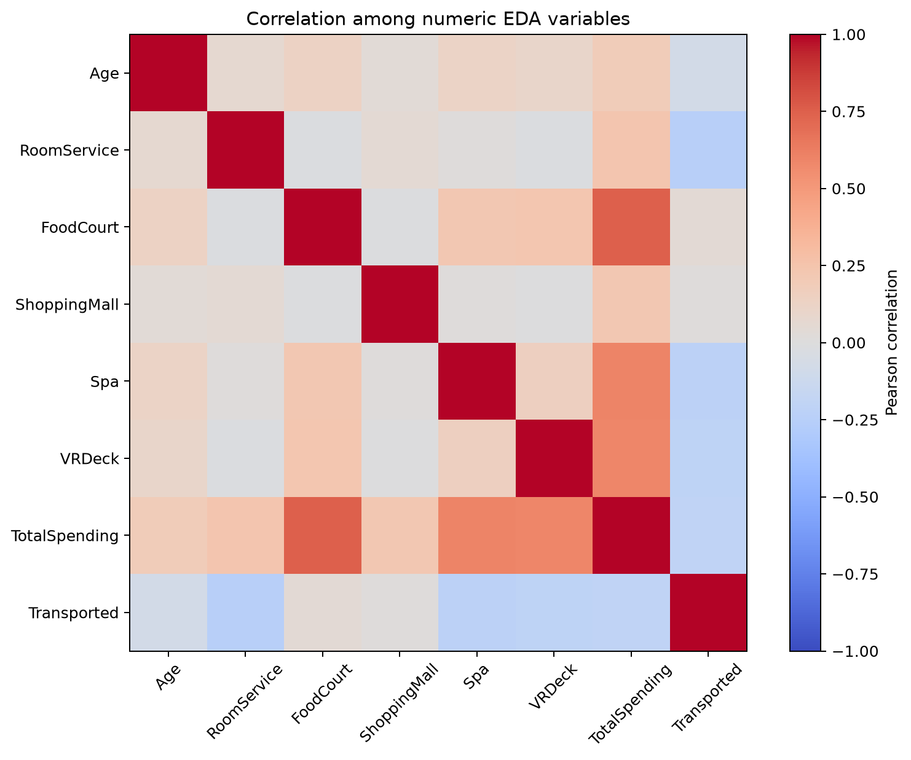
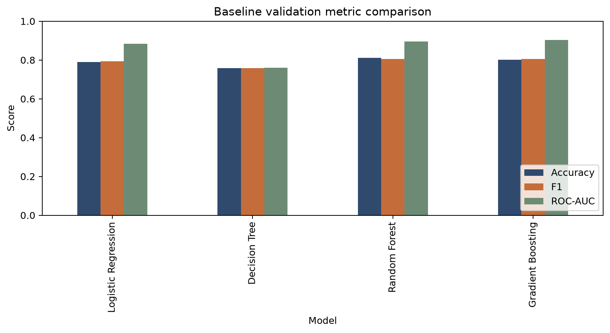

01 / THE DESTINATION
Three new worlds.
A maiden voyage toward newly habitable exoplanets — with Alpha Centauri behind and 55 Cancri E ahead.
YEAR 2912 · MAIDEN VOYAGE
13,000 passengers. One impossible anomaly. One dataset left behind.
BEGIN THE INVESTIGATION ↓01 / THE DESTINATION
A maiden voyage toward newly habitable exoplanets — with Alpha Centauri behind and 55 Cancri E ahead.
02 / LIFE ABOARD
Observation rooms, restaurants, and artificial luxury unfolded beneath the stars.
03 / THE PASSENGERS
13,000+passengers moving through a ship built like a small world.
04 / CRYOSLEEP
A passenger state that later became part of the recovered record.
05 / ANOMALY DETECTED
06 / THE CROSSING
07 / AFTERMATH
Passenger records were damaged. Surviving systems held fragments of the answer.
08 / DATA RECOVERY
Recovered passenger records become the foundation of the investigation.
09 / DATASET
Each row describes one passenger before the anomaly. Training records include the outcome, while the test records do not.
Whether a passenger was transported to another dimension.
Age and five onboard spending measures are continuous values.
Planet, cryosleep, destination, VIP status and cabin structure require encoding.
Missing cells in training are treated inside the fitted pipeline, not discarded.
10 / DATA PREPARATION
Raw records need a consistent representation before a model can learn from them.
11 / FEATURE ENGINEERING
Cabin structure, group size and total spending add interpretable structure without using the passenger ID in this browser form.
12 / EXPLORATORY ANALYSIS
Visual checks make the data’s structure legible before any classification result is interpreted.

Correlation analysis helps identify relationships between numerical passenger attributes and shows which variables move together before modelling.
13 / MODEL TRAINING
Four classification algorithms were evaluated on the same held-out validation records.
14 / MODEL EVALUATION
The production candidate is assessed through complementary metrics and visual diagnostics on a fixed validation split.
Share of all validation records classified correctly.
When transport is predicted, how often that prediction is correct.
Share of transported passengers identified by the model.
Balance between precision and recall.
Ability to rank outcomes across thresholds.

The same prepared validation records were used for all four model comparisons.
15 / CONFUSION MATRIX
Gradient Boosting’s fixed validation outcomes. Select a cell to inspect what it means.
16 / RESCUE
A careful model cannot undo the crossing. It can help reconstruct what the records could not say alone.
INTERSTELLAR PASSENGER RECOVERY